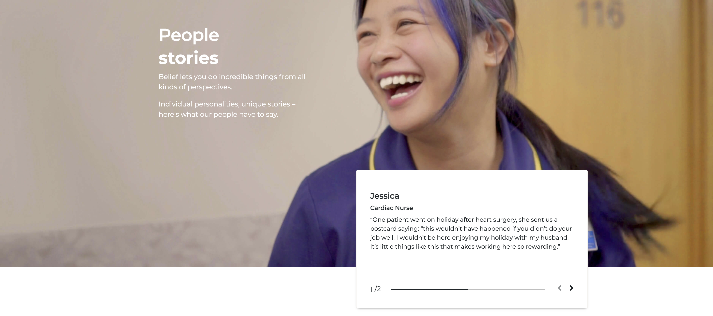
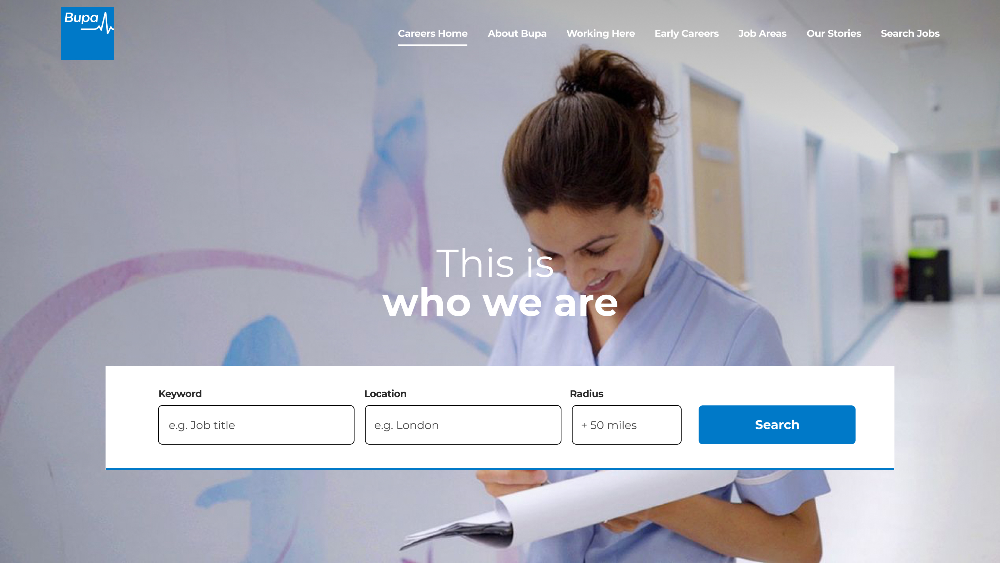
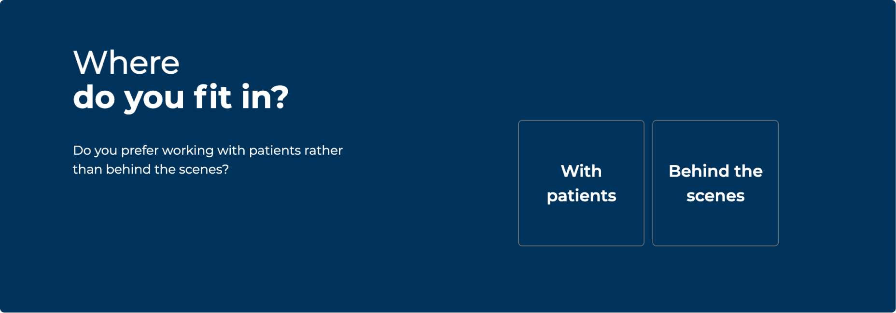

UX AUDIT & INFORMATION ARQUITECTURE
Bupa
Overview
As one of the UK's leading healthcare specialists, our client had detected that their careers website wasn't performing the way it used to, and users were encountering issues regularly. I was tasked with a complete UX audit, with the main objective of providing actionable recommendations that would eliminated the issues and improved the user experience.

UX and content Audit
To get started, I broke down the audit into subareas:
- Understand the strengths and weaknesses of the site
- Evaluate the user journeys through the site
- Evaluate the content strategy on the site
- Understand how effectively Bupa’s employer brand & diversity and inclusion policy was articulated on the site


Some of the key findings were:
- The job search experience was complicated and unclear what the intended user journey is from search through to application.
- The site didn't give the user the opportunity to find roles. Despite outranking other Bupa branded sites on Google, it didn't enable them to search for roles.
- The job search and job description process was managed on the ATS, meaning the user had to navigate multiple sites to find roles.
- Job descriptions were just basic role profiles, without any supporting content and are not being indexed by Google.
- There was useful content on the site, in the Newsroom section, which was not being surfaced and built in to the candidate journey.

A new Information Architecture
The recommended next steps based on the audit conclusions were:
- To rework the site with a focused user journey based on relevant personas and updated business goals.
- To bring jobs on to the careers site, building a job search function that matched user expectations.
- To repurpose newsroom content from the corporate site to the careers site to update the content which was very generalist, obsolete and lacked interest (including D&I related content).
I first created our persona users, based on primary research provided by Bupa themselves and our own desktop research. These helped us define new content themes and areas – which we refined with help from the team on a content sorting workshop.
Outlining the goals of the end users as user stories and the steps needed to achieve them, helped us inform the structure of the website by ensuring an optimal path. The result of this process was the new Information Architecture (AI) for the site.

Wireframing
The scope for this project stated that we had to reuse existing components in the website, and repurpose them for the new content. With this in mind, we reconfigured the new layouts to match the new and signed off Information Arquitecture. We only had to create a couple of UI basic components to cover the search functionality the site didn't have yet.




Role Lead Product Designer – UX, UI
Responsibilities I contributed to secondary research, and lead the UX and content audit, and wireframe design. Launch date Early 2022
Responsibilities I contributed to secondary research, and lead the UX and content audit, and wireframe design. Launch date Early 2022